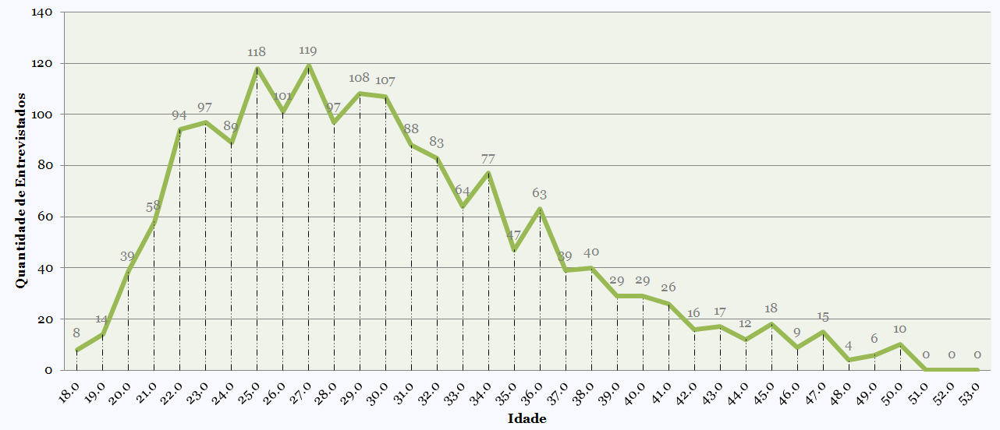
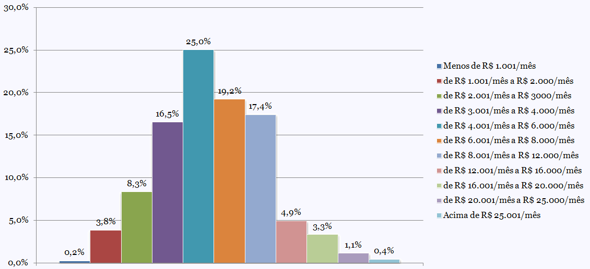

Cientista de Dados no Brasil, ser ou não ser?
Uma abordagem sobre o mercado de trabalho na área de Ciência de Dados no Brasil.
Pesquisa de mercado do Data Hackers
O grupo DataHackers compartilhou em Maio de 2020 o resultado de uma das maiores pesquisas sobre o mercado na área de Ciência de Dados. Foi realizado um Survey que contou com a participação de muitos cientistas de dados do Brasil.
Dados coletados
Os cientistas de dados que responderam a pesquisa compartilharam dados que vão desde faixa salarial até quais as ferramentas que mais usam no trabalho
Mulheres que atuam na área
Dos 1765 relatos coletados, 362 foram de mulheres que atuam na área
Faixa etária
Responderam o Survey profissionais com idade entre 18 e 50 anos, sendo a maioria da faixa etária entre 22 e 34 anos.

Faixa salarial
A média salarial de um Cientista de Dados no Brasil gira em torno de R$ 3.000 à R$ 8.000 por mês. E existem profissionais recebendo até R$ 25.000 nessa profissão.
